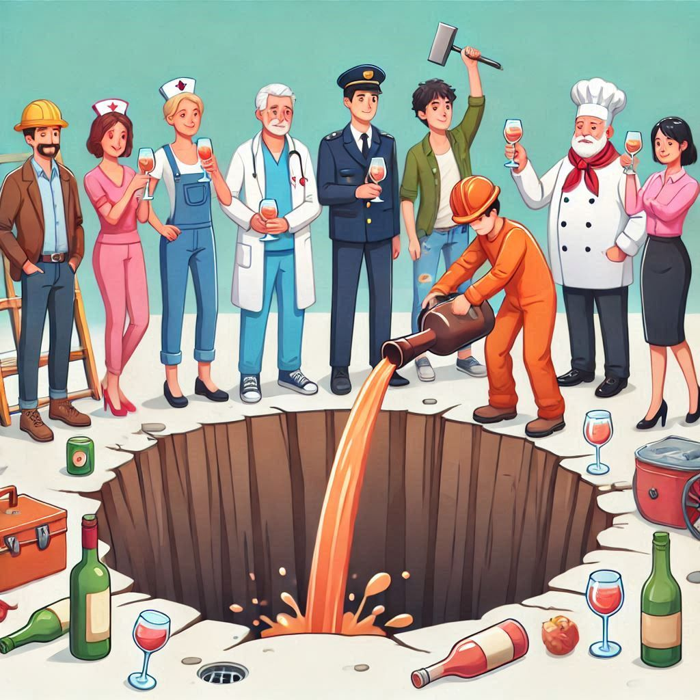
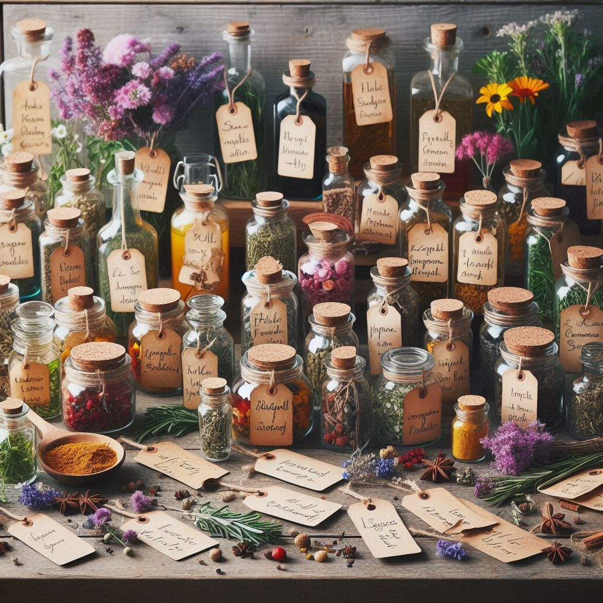
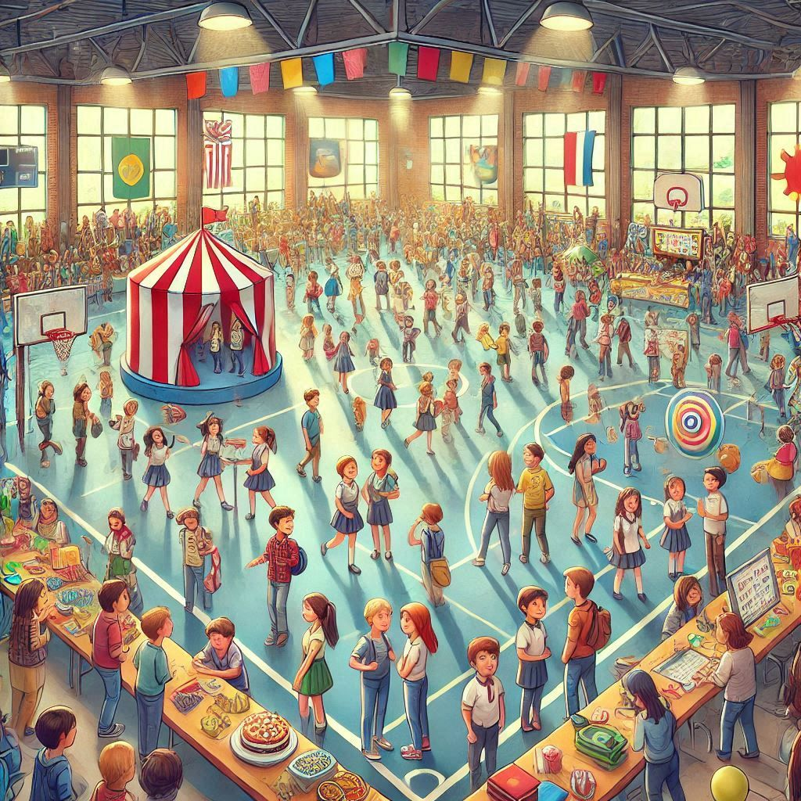
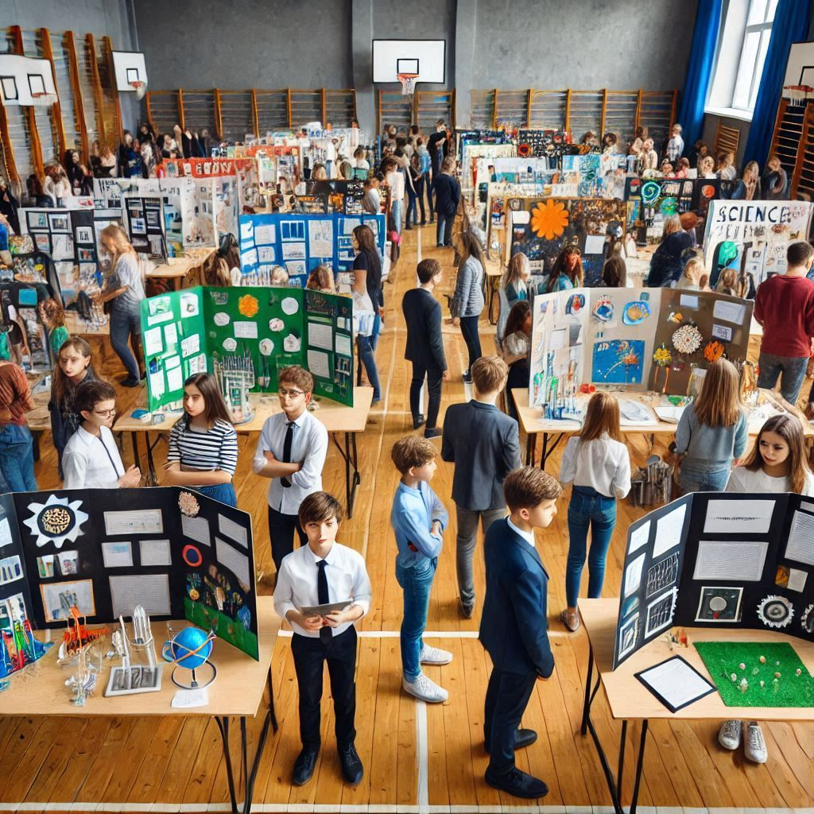

Manchetes:
Curiosidades Sobre Saúde
-Quando devo parar de beber cerveja?
Consumo excessivo de álcool pode afetar saúde do cérebro.

-Os 5 alimentos indispensáveis para o bom funcionamento do intestino.
-Cientistas criam organismo que não está vivo e nem morto.
Está num terceiro estado!Anemia Falciforme
Considerada um "erro celular", a anemia falciforme é uma doença que, no futuro, poderá ser combatida com a tecnologia desenvolvida a partir da Biologia Molecular, conhecida como siclemia ou sicklemia. Foi descoberta em 1904 por um Médico americano ao atender um estudante negro com fraquezas e dores de cabeça.

-Eventos:
Competição de Jornal Mural na Instituição
O melhor jornal mural eleito de cada turma será apresentado na competição para saber qual o melhor jornal mural entre as turmas.
Não perca este evento escolar!
OBS: O trabalho do jornal mural conta como prova final trimestral!

Coordenador do curso de informática do Colégio Santa Ana E Noesa afirma estar a trabalhar num projecto para poder implementar uma feira científica para os alunos.

porém a data ainda não foi divulgada.
Feira científica
Cultura:
Tradição
-
-No interior de Angola, em áreas de maior criação de gado bovino como, Benguela, na comuna do Dombe Grande, Huila, no município de Quilengues, no Cunene e no Cuando-Cubango a herança não pertence aos filhos, mas sim aos sobrinhos, filhos da irmã. Isso se dá porque os sobrinhos são o sangue real da família, mesmo que sejam frutos de infidelidade, pois a irmã carregou-os no ventre.
Também são considerados verdadeiros herdeiros porque da irmã foram gerados. -Se um homem desconfiar que a criança recém-nascida não é sua, ele espera pela cicatrizção do umbigo e, após isso ocorrer, o sogro paterno deverá ser o primeiro a dar de comer ao suposto neto. Num quarto escuro, com o dedo indicador direito, sentado num luando, e ele dá a prieira refeiçãoao bebé. Espera-se viinte e quatro horas. Se a criança adoencer e morrer, então ela não era filha do suposto pai, mas, se viver, pertence à geração paterna.
Magia Negra
Existem dois tipos, que são: A mecânica e a metafísica.
A mecânica é praticada por indivíduos que conhecem plantas venenosas ou fatais. Esses indivíduos, quando pretendem prejudicar alguém, apanham folhas, as misturam e as friccionam em suas mãos.
Depois, vão ao encontro de suas vítimas.A metafísica é mais complexa, pois o "Bruxo" fala com seres espirituais e lhes dá ordens para que traumatizem determinadas pessoas.